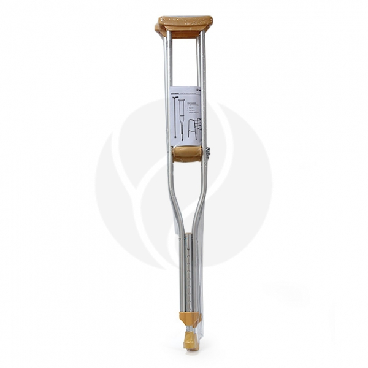

| Названия | Состав | Цена | Внешний вид |
|---|---|---|---|
| 3859 | Алюминиевый коррозионно-стойкий сплав; неабсорбирующий полимерный материал | Trives костыли подмышечные со встроенным УПС CA802L (L), серый, №2 | |
| 1569 | Алюминий, прорезиненный нескользящий, неабсорбирующий, амортизирующий материал | B.Well трость классическая WR-414 | |
| 3149 | Алюминий | B.Well костыли подмышечные WR-311, (р.M), №2 |  |